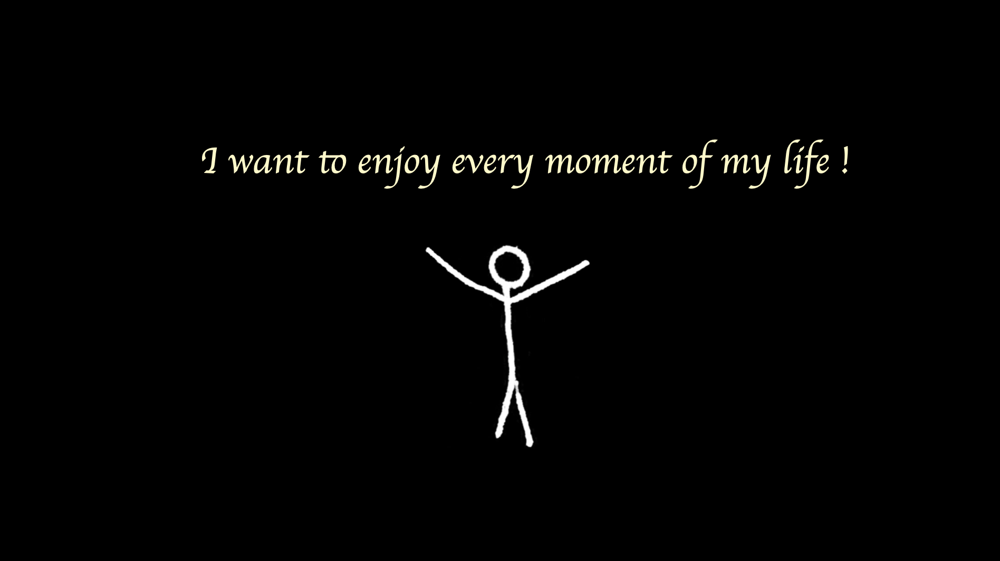

This series of projects turned what could have been an exhausting journey (over ten hours round-trip, twice a week) into something meaningful and rewarding. It made me pay closer attention to cities I might have otherwise overlooked and allowed me to capture beautiful moments along the way.

For me, solar energy is active energy. It's energy I can only gain by actively moving.
If I stop moving forward, I lose the power of the sun—the brightest source of light in the universe.
Instead of thinking, “Why is this happening to me?” or “Commuting is exhausting. Wouldn’t it be better to just stay home?”, I want to enjoy every moment of my life and share that joy with others.

**
This solar panel project has also grown beyond its first experiment, Sunlight TV, gradually branching out through different mediums and collaborations. Here you can explore how the project has expanded so far, and this page will continue to be updated with new projects.


**
Another Day of Sun
I made a small zine from my solar panel story.
Inside the zine cover, there is a card-sized magnifying glass that serves as a distributable version of my solar panel.


When readers take the cover out and focus sunlight through the magnifying glass, it immediately burns a hole through the middle of the sun graphic because the black square at the center absorbs heat faster than the surrounding white area.

When it is held up to a window, the hole lets sunlight shine onto the photograph, creating the image of the sun shining over the workshop participants.

To represent the value of resilience, I placed it on the kitchen window where the intruder had entered.

**
(Do–Re–Mi–Fa) Sol–Ra.dio


**
Little Wrens

**
Are.na Camera

To be continued ...